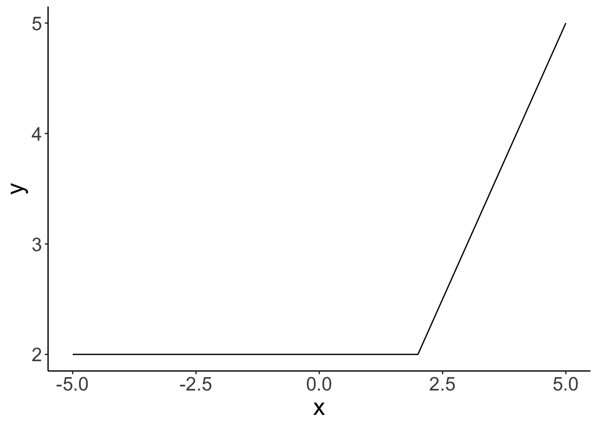
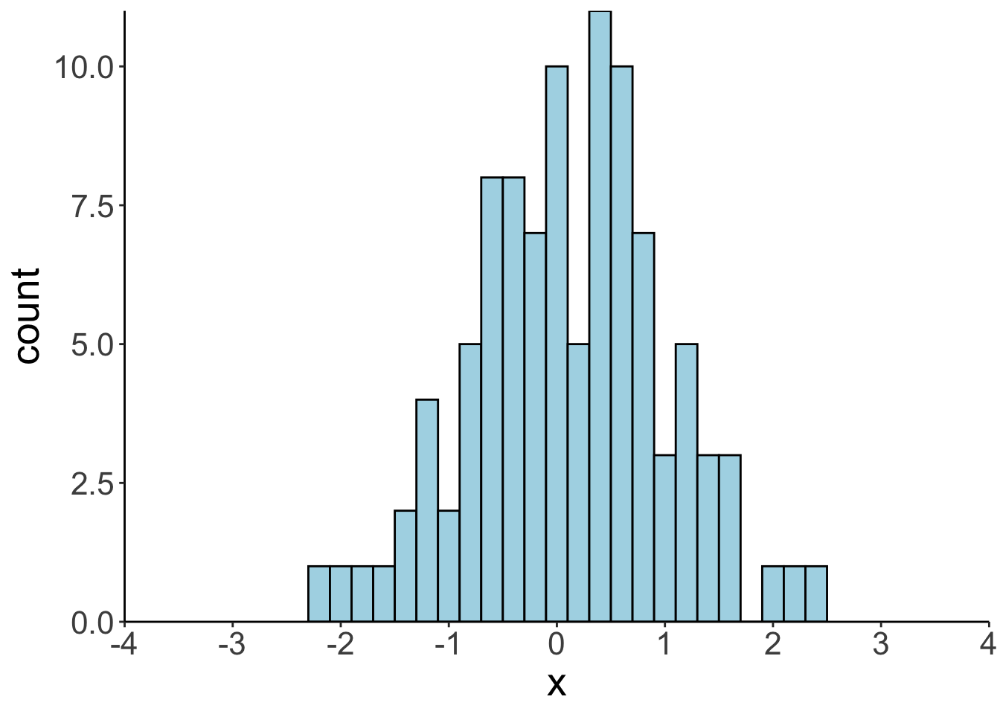
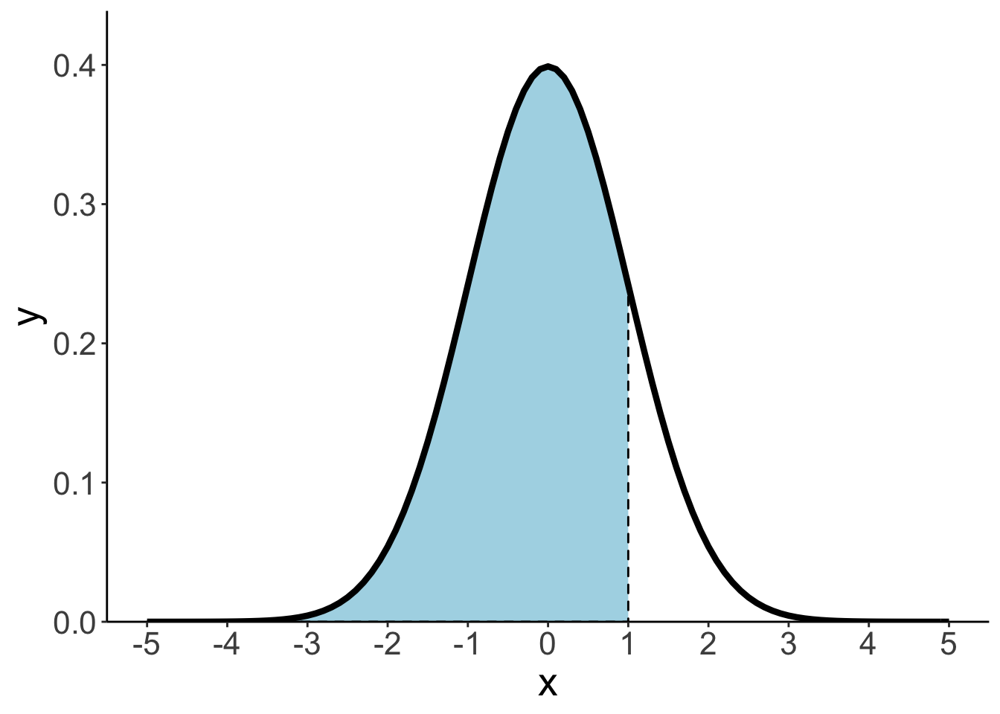
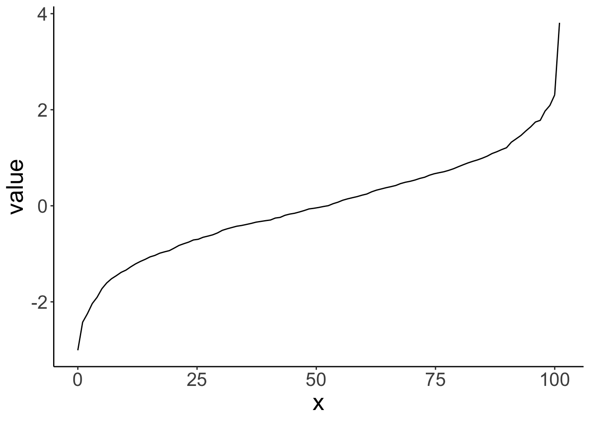

Chapter 7 Simulation 1
7.1 Load packages and set plotting theme
7.2 Working with distributions
Every distribution that R handles has four functions. There is a root name, for example, the root name for the normal distribution is norm. This root is prefixed by one of the letters here:
| letter | description | example |
|---|---|---|
d
|
for “density”, the density function (probability function (for discrete variables) or probability density function (for continuous variables)) |
dnorm()
|
p
|
for “probability”, the cumulative distribution function |
pnorm()
|
q
|
for “quantile”, the inverse cumulative distribution function |
qnorm()
|
r
|
for “random”, a random variable having the specified distribution |
rnorm()
|
For the normal distribution, these functions are dnorm, pnorm, qnorm, and rnorm. For the binomial distribution, these functions are dbinom, pbinom, qbinom, and rbinom. And so forth.
You can get more info about the distributions that come with R via running help(Distributions) in your console. If you need a distribution that doesn’t already come with R, then take a look here for many more distributions that can be loaded with different R packages.
7.2.1 Plotting distributions
Here’s an easy way to plot distributions in ggplot2 using the stat_function() function.

Note that the data frame I created with tibble() only needs to have the minimum and the maximum value of the x-range that we are interested in. Here, I chose -5 and 5 as the minimum and maximum, respectively.
The stat_function() is very flexible. We can define our own functions and plot these like here:
# define the breakpoint function
fun.breakpoint = function(x, breakpoint){
x[x < breakpoint] = breakpoint
return(x)
}
# plot the function
ggplot(data = tibble(x = c(-5, 5)),
mapping = aes(x = x)) +
stat_function(fun = ~ fun.breakpoint(., breakpoint = 2))
Here, I defined a breakpoint function. If the value of x is below the breakpoint, y equals the value of the breakpoint. If the value of x is greater than the breakpoint, then y equals x.
Note how I used the args = argument in the stat_function() to supply the breakpoint parameter that my fun.breakpoint() wants. Make sure to put these parameters into a list() as shown above.
Let’s play around with the parameters of the normal distribution. The normal distribution takes two parameters, the mean and standard deviation. Again, I’m going to use the args = argument to supply these parameters.
tmp.mean = 0
tmp.sd = 1
ggplot(data = tibble(x = c(-5, 5)),
mapping = aes(x = x)) +
stat_function(fun = ~ dnorm(x = .,
mean = tmp.mean,
sd = tmp.sd))
To keep my environment clean, I’ve named the parameters tmp.mean and tmp.sd and then, at the end of the code chunk, I removed all variables from the environment that have “tmp.” in their name using the ls() function (which prints out all variables in the environment as a vector), and the str_subset() function which filters out only those variables that contain the specified pattern.
7.2.2 Sampling from distributions
For each distribution, R provides a way of sampling random number from this distribution. For the normal distribution, we can use the rnorm() function to take random samples.
So let’s take some random samples and plot a histogram.
# make this example reproducible
set.seed(1)
# define how many samples to draw
tmp.nsamples = 100
# make a data frame with the samples
df.plot = tibble(x = rnorm(n = tmp.nsamples, mean = 0, sd = 1))
# plot the samples using a histogram
ggplot(data = df.plot,
mapping = aes(x = x)) +
geom_histogram(binwidth = 0.2,
color = "black",
fill = "lightblue") +
scale_x_continuous(breaks = -4:4, labels = -4:4) +
coord_cartesian(xlim = c(-4, 4), expand = F)
Let’s see how many samples it takes to closely approximate the shape of the normal distribution with our histogram of samples.
# make this example reproducible
set.seed(1)
# play around with this value
tmp.nsamples = 100
# tmp.nsamples = 10000
tmp.binwidth = 0.2
# make a data frame with the samples
df.plot = tibble(
x = rnorm(n = tmp.nsamples, mean = 0, sd = 1)
)
# adjust the density of the normal distribution based on the samples and binwidth
fun.dnorm = function(x, mean, sd, n, binwidth){
dnorm(x = x, mean = mean, sd = sd) * n * binwidth
}
# plot the samples using a histogram
ggplot(data = df.plot,
mapping = aes(x = x)) +
geom_histogram(binwidth = tmp.binwidth,
color = "black",
fill = "lightblue") +
stat_function(fun = ~ fun.dnorm(x = .,
mean = 0,
sd = 1,
n = tmp.nsamples,
binwidth = tmp.binwidth),
xlim = c(min(df.plot$x), max(df.plot$x)),
size = 2) +
annotate(geom = "text",
label = str_c("n = ", tmp.nsamples),
x = -3.9,
y = Inf,
hjust = 0,
vjust = 1.1,
size = 10,
family = "Courier New") +
scale_x_continuous(breaks = -4:4, labels = -4:4) +
coord_cartesian(xlim = c(-4, 4), expand = F)
With 10,000 samples, our histogram of samples already closely resembles the theoretical shape of the normal distribution.
7.2.3 Cumulative probability distribution
ggplot(data = tibble(x = c(-5, 5)),
mapping = aes(x = x)) +
stat_function(fun = ~ pnorm(q = .,
mean = 0,
sd = 1))
Let’s find the cumulative probability of a particular value.
## [1] 0.841# draw the cumulative probability distribution and show the value
ggplot(data = tibble(x = c(-5, 5)),
mapping = aes(x = x)) +
stat_function(fun = ~ pnorm(q = .,
mean = 0,
sd= 1 )) +
annotate(geom = "point",
x = tmp.x,
y = tmp.y,
size = 4,
color = "blue") +
geom_segment(mapping = aes(x = tmp.x,
xend = tmp.x,
y = 0,
yend = tmp.y),
size = 1,
color = "blue") +
geom_segment(mapping = aes(x = -5,
xend = tmp.x,
y = tmp.y,
yend = tmp.y),
size = 1,
color = "blue") +
scale_x_continuous(breaks = -5:5) +
coord_cartesian(xlim = c(-5, 5),
ylim = c(0, 1.05),
expand = F)
# remove all variables with tmp in their name
rm(list = str_subset(string = ls(), pattern = "tmp."))Let’s illustrate what this would look like using a normal density plot.
ggplot(data = tibble(x = c(-5, 5)),
mapping = aes(x = x)) +
stat_function(fun = "dnorm",
geom = "area",
fill = "lightblue",
xlim = c(-5, 1),
color = "black",
linetype = 2) +
stat_function(fun = "dnorm",
size = 1.5) +
coord_cartesian(xlim = c(-5, 5)) +
scale_x_continuous(breaks = -5:5) +
scale_y_continuous(expand = expand_scale(mult = c(0, 0.1))) 
7.2.4 Inverse cumulative distribution
ggplot(data = tibble(x = c(0, 1)),
mapping = aes(x = x)) +
stat_function(fun = ~ qnorm(p = .,
mean = 0,
sd = 1))
And let’s compute the inverse cumulative probability for a particular value.
## [1] 1.96# draw the cumulative probability distribution and show the value
ggplot(data = tibble(x = c(0, 1)),
mapping = aes(x = x)) +
stat_function(fun = "qnorm",
args = list(mean = 0,
sd = 1)) +
annotate(geom = "point",
x = tmp.x,
y = tmp.y,
size = 4,
color = "blue") +
geom_segment(mapping = aes(x = tmp.x,
xend = tmp.x,
y = -3,
yend = tmp.y),
size = 1,
color = "blue") +
geom_segment(mapping = aes(x = 0,
xend = tmp.x,
y = tmp.y,
yend = tmp.y),
size = 1,
color = "blue") +
scale_x_continuous(breaks = seq(from = 0, to = 1, by = 0.1)) +
coord_cartesian(xlim = c(0, 1.05),
ylim = c(-3, 3),
expand = F)
7.2.5 Computing probabilities
7.2.5.1 Via probability distributions
Let’s compute the probability of observing a particular value \(x\) in a given range.
# tmp.lower = -1
# tmp.upper = 1
# tmp.lower = -2
# tmp.upper = 2
# tmp.lower = qnorm(0.001)
# tmp.upper = qnorm(0.95)
# tmp.lower = qnorm(0.05)
# tmp.upper = qnorm(0.999)
tmp.lower = qnorm(0.025)
tmp.upper = qnorm(0.975)
tmp.prob = pnorm(tmp.upper) - pnorm(tmp.lower)
ggplot(data = tibble(x = c(-5, 5)),
mapping = aes(x = x)) +
stat_function(fun = "dnorm",
geom = "area",
fill = "lightblue",
xlim = c(tmp.lower, tmp.upper),
color = "black",
linetype = 2) +
stat_function(fun = "dnorm",
size = 1.5) +
annotate(geom = "text",
label = str_c(tmp.prob %>% round(2) * 100, "%"),
x = 0,
y = 0.2,
hjust = 0.5,
size = 10
) +
coord_cartesian(xlim = c(-5, 5)) +
scale_x_continuous(breaks = -5:5) +
scale_y_continuous(expand = expand_scale(mult = c(0, 0.1))) 
# remove all variables with tmp in their name
rm(list = str_subset(string = ls(), pattern = "tmp."))We find that 95% of the density in the normal distribution is between -1.96 and 1.96.
7.2.5.2 Via sampling
We can also compute the probability of observing certain events using sampling. We first generate samples from the desired probability distribution, and then use these samples to compute our statistic of interest.
# let's compute the probability of observing a value within a certain range
tmp.lower = -1.96
tmp.upper = 1.96
# make example reproducible
set.seed(1)
# generate some samples and store them in a data frame
tmp.nsamples = 10000
df.samples = tibble(sample = 1:tmp.nsamples,
value = rnorm(n = tmp.nsamples, mean = 0, sd = 1))
# compute the probability that s sample lies within the range of interest
tmp.prob = df.samples %>%
filter(value >= tmp.lower,
value <= tmp.upper) %>%
summarize(prob = n()/tmp.nsamples)
# illustrate the result using a histogram
ggplot(data = df.samples,
mapping = aes(x = value)) +
geom_histogram(binwidth = 0.1,
color = "black",
fill = "lightblue") +
scale_x_continuous(breaks = -4:4, labels = -4:4) +
coord_cartesian(xlim = c(-4, 4), expand = F) +
geom_vline(xintercept = tmp.lower,
size = 1,
color = "red",
linetype = 2) +
geom_vline(xintercept = tmp.upper,
size = 1,
color = "red",
linetype = 2) +
annotate(geom = "label",
label = str_c(tmp.prob %>% round(3) * 100, "%"),
x = 0,
y = 200,
hjust = 0.5,
size = 10)
7.3 Bayesian inference with the normal distribution
Let’s consider the following scenario. You are helping out at a summer camp. This summer, two different groups of kids go to the same summer camp. The chess kids, and the basketball kids. The chess summer camp is not quite as popular as the basketball summer camp (shocking, I know!). In fact, twice as many children have signed up for the basketball camp.
When signing up for the camp, the children were asked for some demographic information including their height in cm. Unsurprisingly, the basketball players tend to be taller on average than the chess players. In fact, the basketball players’ height is approximately normally distributed with a mean of 180cm and a standard deviation of 10cm. For the chess players, the mean height is 170cm with a standard deviation of 8cm.
At the camp site, a child walks over to you and asks you where their gym is. You gage that the child is around 175cm tall. Where should you direct the child to? To the basketball gym, or to the chess gym?
7.3.1 Analytic solution
height = 175
# priors
prior_basketball = 2/3
prior_chess = 1/3
# likelihood
mean_basketball = 180
sd_basketball = 10
mean_chess = 170
sd_chess = 8
likelihood_basketball = dnorm(height, mean = mean_basketball, sd = sd_basketball)
likelihood_chess = dnorm(height, mean = mean_chess, sd = sd_chess)
# posterior
posterior_basketball = (likelihood_basketball * prior_basketball) /
((likelihood_basketball * prior_basketball) + (likelihood_chess * prior_chess))
posterior_basketball %>% print()## [1] 0.6318867.3.2 Solution via sampling
Let’s do the same thing via sampling.
# number of kids
tmp.nkids = 10000
# make reproducible
set.seed(1)
# priors
prior_basketball = 2/3
prior_chess = 1/3
# likelihood functions
mean_basketball = 180
sd_basketball = 10
mean_chess = 170
sd_chess = 8
# data frame with the kids
df.camp = tibble(kid = 1:tmp.nkids,
sport = sample(c("chess", "basketball"),
size = tmp.nkids,
replace = T,
prob = c(prior_chess, prior_basketball))) %>%
rowwise() %>%
mutate(height = ifelse(test = sport == "chess",
yes = rnorm(., mean = mean_chess, sd = sd_chess),
no = rnorm(., mean = mean_basketball, sd = sd_basketball))) %>%
ungroup
df.camp %>% print()## # A tibble: 10,000 x 3
## kid sport height
## <int> <chr> <dbl>
## 1 1 basketball 165.
## 2 2 basketball 163.
## 3 3 basketball 191.
## 4 4 chess 160.
## 5 5 basketball 183.
## 6 6 chess 164.
## 7 7 chess 169.
## 8 8 basketball 193.
## 9 9 basketball 172.
## 10 10 basketball 177.
## # … with 9,990 more rowsNow we have a data frame with kids whose height was randomly sampled depending on which sport they do. I’ve used the sample() function to assign a sport to each kid first using the prob = argument to make sure that a kid is more likely to be assigned the sport “basketball” than “chess”.
Note that the solution above is not particularly efficient since it uses the rowwise() function to make sure that a different random value for height is drawn for each row. Running this code will get slow for large samples. A more efficient solution would be the following:
# number of kids
tmp.nkids = 100000
# make reproducible
set.seed(3)
df.camp2 = tibble(
kid = 1:tmp.nkids,
sport = sample(c("chess", "basketball"),
size = tmp.nkids,
replace = T,
prob = c(prior_chess, prior_basketball))) %>%
arrange(sport) %>%
mutate(height = c(rnorm(sum(sport == "basketball"),
mean = mean_basketball,
sd = sd_basketball),
rnorm(sum(sport == "chess"),
mean = mean_chess,
sd = sd_chess)))In this solution, I take advantage of the fact that rnorm() is vectorized. That is, it can produce many random draws in one call. To make this work, I first arrange the data frame, and then draw the correct number of samples from each of the two distributions. This works fast, even if I’m drawing a large number of samples.
How can we now use these samples to answer our question of interest? Let’s see what doesn’t work first:
tmp.height = 175
df.camp %>%
filter(height == tmp.height) %>%
count(sport) %>%
pivot_wider(names_from = sport, values_from = n) %>%
summarize(prob_basketball = basketball/(basketball + chess))The reason this doesn’t work is because none of our kids is exactly 175cm tall. Instead, we need to filter kids that are within a certain height range.
tmp.height = 175
tmp.margin = 1
df.camp %>%
filter(between(height,
left = tmp.height - tmp.margin,
right = tmp.height + tmp.margin)) %>%
count(sport) %>%
pivot_wider(names_from = sport,
values_from = n) %>%
summarize(prob_basketball = basketball/(basketball + chess))## # A tibble: 1 x 1
## prob_basketball
## <dbl>
## 1 0.632Here, I’ve used the between() function which is a shortcut for otherwise writing x >= left & x <= right. You can play around with the margin to see how the result changes.
7.4 Working with samples
7.4.1 Understanding density()
First, let’s calculate the density for a set of observations and store them in a data frame.
# calculate density
observations = c(1, 1.2, 1.5, 2, 3)
bandwidth = 0.25 # bandwidth (= sd) of the Gaussian distribution
tmp.density = density(observations,
kernel = "gaussian",
bw = bandwidth,
n = 512)
# save density as data frame
df.density = tibble(x = tmp.density$x,
y = tmp.density$y)
df.density %>%
head() %>%
kable(digits = 3) %>%
kable_styling(bootstrap_options = "striped",
full_width = F)| x | y |
|---|---|
| 0.250 | 0.004 |
| 0.257 | 0.004 |
| 0.264 | 0.005 |
| 0.271 | 0.005 |
| 0.277 | 0.005 |
| 0.284 | 0.006 |
Now, let’s plot the density.
ggplot(data = df.density,
mapping = aes(x = x, y = y)) +
geom_line(size = 2) +
geom_point(data = enframe(observations),
mapping = aes(x = value, y = 0),
size = 3)This density shows the sum of the densities of normal distributions that are centered at the observations with the specified bandwidth.
# add densities for the individual normal distributions
for (i in 1:length(observations)){
df.density[[str_c("observation_",i)]] = dnorm(df.density$x,
mean = observations[i],
sd = bandwidth)
}
# sum densities
df.density = df.density %>%
mutate(sum_norm = rowSums(select(., contains("observation_"))),
y = y * length(observations))
df.density %>%
head() %>%
kable(digits = 3) %>%
kable_styling(bootstrap_options = "striped",
full_width = F)| x | y | observation_1 | observation_2 | observation_3 | observation_4 | observation_5 | sum_norm |
|---|---|---|---|---|---|---|---|
| 0.250 | 0.019 | 0.018 | 0.001 | 0 | 0 | 0 | 0.019 |
| 0.257 | 0.021 | 0.019 | 0.001 | 0 | 0 | 0 | 0.021 |
| 0.264 | 0.023 | 0.021 | 0.001 | 0 | 0 | 0 | 0.022 |
| 0.271 | 0.024 | 0.023 | 0.002 | 0 | 0 | 0 | 0.024 |
| 0.277 | 0.027 | 0.024 | 0.002 | 0 | 0 | 0 | 0.026 |
| 0.284 | 0.029 | 0.026 | 0.002 | 0 | 0 | 0 | 0.028 |
Now, let’s plot the individual densities as well as the overall density.
# colors of individual Gaussian distributions
colors = c("blue", "green", "red", "purple", "orange")
# original density
p = ggplot(data = df.density, aes(x = x, y = y)) +
geom_line(size = 2)
# individual densities
for (i in 1:length(observations)){
p = p + stat_function(fun = "dnorm",
args = list(mean = observations[i], sd = bandwidth),
color = colors[i])
}
# individual observations
p = p + geom_point(data = enframe(observations),
mapping = aes(x = value, y = 0, color = factor(1:5)),
size = 3,
show.legend = F) +
scale_color_manual(values = colors)
# sum of the individual densities
p = p +
geom_line(data = df.density,
aes(x = x, y = sum_norm),
size = 1,
color = "red",
linetype = 2)
p # print the figure
Here are the same results when specifying a different bandwidth:
# colors of individual Gaussian distributions
colors = c("blue", "green", "red", "purple", "orange")
# calculate density
observations = c(1, 1.2, 1.5, 2, 3)
bandwidth = 0.5 # bandwidth (= sd) of the Gaussian distribution
tmp.density = density(observations,
kernel = "gaussian",
bw = bandwidth,
n = 512)
# save density as data frame
df.density = tibble(
x = tmp.density$x,
y = tmp.density$y
)
# add densities for the individual normal distributions
for (i in 1:length(observations)){
df.density[[str_c("observation_",i)]] = dnorm(df.density$x,
mean = observations[i],
sd = bandwidth)
}
# sum densities
df.density = df.density %>%
mutate(sum_norm = rowSums(select(., contains("observation_"))),
y = y * length(observations))
# original plot
p = ggplot(data = df.density, aes(x = x, y = y)) +
geom_line(size = 2) +
geom_point(data = enframe(observations),
mapping = aes(x = value,
y = 0,
color = factor(1:5)),
size = 3,
show.legend = F) +
scale_color_manual(values = colors)
# add individual Gaussians
for (i in 1:length(observations)){
p = p + stat_function(fun = "dnorm",
args = list(mean = observations[i], sd = bandwidth),
color = colors[i])
}
# add the sum of Gaussians
p = p +
geom_line(data = df.density,
aes(x = x, y = sum_norm),
size = 1,
color = "red",
linetype = 2)
p
7.4.2 The quantile() function
The quantile() function allows us to compute different quantiles of a sample. Boxplots are based on the quantiles of a distribution. To better understand this function, let’s compute our own boxplot.
tmp.samples = 1000
# make example reproducible
set.seed(1)
# a sample from the normal distribution
df.quantile = tibble(
sample = 1:tmp.samples,
value = rnorm(n = tmp.samples))
df.quantile %>%
head(10) %>%
kable(digits = 2) %>%
kable_styling(bootstrap_options = "striped",
full_width = F)| sample | value |
|---|---|
| 1 | -0.63 |
| 2 | 0.18 |
| 3 | -0.84 |
| 4 | 1.60 |
| 5 | 0.33 |
| 6 | -0.82 |
| 7 | 0.49 |
| 8 | 0.74 |
| 9 | 0.58 |
| 10 | -0.31 |
Let’s draw a boxplot using ggplot.

Here is a reminder of what boxplots show from the help file of geom_boxplot():
The lower and upper hinges correspond to the first and third quartiles (the 25th and 75th percentiles). This differs slightly from the method used by the boxplot() function, and may be apparent with small samples. See boxplot.stats() for for more information on how hinge positions are calculated for boxplot().
The upper whisker extends from the hinge to the largest value no further than 1.5 * IQR from the hinge (where IQR is the inter-quartile range, or distance between the first and third quartiles). The lower whisker extends from the hinge to the smallest value at most 1.5 * IQR of the hinge. Data beyond the end of the whiskers are called “outlying” points and are plotted individually.
So, let’s compute the relevant values using the quantile() function.
df.quantile_values = tibble(median = quantile(df.quantile$value, 0.5),
quartile_first = quantile(df.quantile$value, 0.25),
quartile_third = quantile(df.quantile$value, 0.75),
iqr = quartile_third - quartile_first,
whisker_upper = quartile_third + 1.5 * iqr,
whisker_lower = quartile_first - 1.5 * iqr)Now, let’s check whether our values are correct by plotting them on top of the boxplot.
# original boxplot
ggplot(data = df.quantile,
mapping = aes(x = 0, y = value)) +
geom_boxplot() +
geom_segment(x = -0.75,
xend = -0.45,
y = df.quantile_values$median,
yend = df.quantile_values$median,
arrow = arrow(type = "closed",
length = unit(0.5, "cm"))
) +
annotate(geom = "text",
label = "median",
x = -0.8,
y = df.quantile_values$median,
hjust = 1,
vjust = 0.5,
size = 6) +
geom_segment(x = -0.75,
xend = -0.45,
y = df.quantile_values$quartile_third,
yend = df.quantile_values$quartile_third,
arrow = arrow(type = "closed",
length = unit(0.5, "cm"))
) +
annotate(geom = "text",
label = "3rd quartile",
x = -0.8,
y = df.quantile_values$quartile_third,
hjust = 1,
vjust = 0.5,
size = 6) +
geom_segment(x = -0.75,
xend = -0.05,
y = df.quantile_values$whisker_upper,
yend = df.quantile_values$whisker_upper,
arrow = arrow(type = "closed",
length = unit(0.5, "cm"))
) +
annotate(geom = "text",
label = "upper whisker",
x = -0.8,
y = df.quantile_values$whisker_upper,
hjust = 1,
vjust = 0.5,
size = 6) +
coord_cartesian(xlim = c(-1.2, 0.5))
Neat! Now we know how boxplots are made.
We can also use the quantile function to create an inverse cumulative probability plot (i.e. the equivalent of what we get from qnorm() for the normal distribution).
df.plot = df.quantile$value %>%
quantile(probs = seq(0, 1, 0.01)) %>%
as_tibble() %>%
mutate(x = seq(0, n(), length.out = n()))## Warning: Calling `as_tibble()` on a vector is discouraged, because the behavior is likely to change in the future. Use `tibble::enframe(name = NULL)` instead.
## This warning is displayed once per session.
And we can calculate quantiles by hand in the following way:
tmp.samples = 1000
# make example reproducible
set.seed(1)
# a sample from the normal distribution
df.quantile = tibble(
sample = 1:tmp.samples,
value = rnorm(n = tmp.samples))
# compute quantiles by hand
df.quantile = df.quantile %>%
arrange(value) %>%
mutate(rank = row_number(),
quantile = rank/tmp.samples)To compute the quantiles by hand, I’ve sorted the data frame, ranked the values, and then computed the quantiles by normalizing the ranks (i.e. dividing by the sample size).
Let’s check whether we get roughly the same result with our hand-calculated quantiles as we do from the quantile() function.
## [1] -0.8848496 -0.2968686 0.2441649 0.8528150## 20% 40% 60% 80%
## -0.8815065 -0.2961539 0.2449833 0.8537340As we can see, the results are very similar. Not identical since the quantile() function uses an efficient algorithm for its calculations (see help(quantile)).
7.5 Comparing probability distributions
QQ plots, or quantile-quantile plots, are a good way of visually comparing two distributions. One common usage in statistics is to assess whether a variable is normally distributed. For example, let’s say that we fit a regression model and want to now assess whether the residuals (i.e. the model errors) are normally distributed. (We will learn how to run regressions soon). Let’s first just plot the residuals from the model we fit above.
df.residuals = tibble(residual = rnorm(n = 10000,
mean = 0,
sd = 10))
params = as.list(MASS::fitdistr(df.residuals$residual, "normal")$estimate) #fit a normal distribution to the residuals
ggplot(data = df.residuals,
mapping = aes(x = residual))+
stat_density(geom = "line",
mapping = aes(color = "green"),
size = 1.5)+
stat_function(fun = "dnorm",
args = params,
mapping = aes(color = "black"),
size = 1.5)+
scale_color_manual(values = c("black", "green"),
labels = c("theoretical", "empirical")) +
theme(legend.title = element_blank(),
legend.position = c(0.9, 0.9))
Figure 7.1: Empirical distribution of residuals, and theoretical distribution.
Here, the empirical distribution of the errors and the theoretical normal distribution with a mean of 0 and a SD of 2 correspond very closely. Let’s take a look at the corresponding QQ plot.
ggplot(data = df.residuals, mapping = aes(sample = residual)) +
geom_abline(intercept = 0,
slope = 1,
linetype = 2) +
geom_qq(distribution = "qnorm", dparams = params) +
coord_cartesian(xlim = c(-40, 40), ylim = c(-40, 40))Figure 7.2: Quantile-Quantile plot.
Note that the QQ plot is sensitive to the general shape of the distribution.
I’ve used the geom_qq() and geom_qq_line() functions that are part of ggplot. By default, these functions assume a normal distribution as the theoretical distribution. This plot is just another way of showing the information in Figure 7.2. Intuitively, a QQ plot is built in the following way: imagine going with your finger from left to right along the x-axis on Figure 7.2, and then add a point on the QQ plot which captures the cumulative density for each distribution.
Here are some more examples for what these plots would look like when comparing different theoretical distributions to the same empirical distribution.
# data frame with parameters saved in a list column
df.parameters = tibble(parameters = list(params,
list(mean = -10, sd = 10),
list(mean = 10, sd = 10),
list(mean = 0, sd = 3)))
# list container for plots
l.plots = list()
for (i in 1:nrow(df.parameters)){
p1 = ggplot(data = df.residuals,
mapping = aes(x = residual)) +
stat_density(geom = "line",
color = "green",
size = 1.5) +
stat_function(fun = "dnorm",
args = df.parameters$parameters[[i]],
color = "black",
size = 1.5) +
scale_y_continuous(limits = c(0, 0.15))
p2 = ggplot(data = df.residuals,
mapping = aes(sample = residual)) +
geom_abline(intercept = 0,
slope = 1,
linetype = 2) +
geom_qq(dparams = df.parameters$parameters[[i]]) +
geom_qq_line(dparams = df.parameters$parameters[[i]]) +
scale_x_continuous(limits = c(-40, 40))
l.plots[[length(l.plots) + 1]] = p1
l.plots[[length(l.plots) + 1]] = p2
}
# use patchwork for plotting
wrap_plots(l.plots,
nrow = 2,
byrow = F)
The line changes, but it’s still a line. So the QQ plot helps us detect what kind of distribution the data follows.
Now, let’s see what happens if distributions don’t have the same shape.
#let's generate some "empirical" data from a beta distribution
set.seed(0)
df.plot = tibble(residual = rbeta(1000,
shape1 = 5,
shape2 = 5))
# data frame with parameters saved in a list column
df.parameters = tibble(parameters = list(list(shape1 = 1, shape2 = 5),
list(shape1 = 2, shape2 = 5),
list(shape1 = 5, shape2 = 2),
list(shape1 = 5, shape2 = 1)))
# list container for plots
l.plots = list()
for (i in 1:nrow(df.parameters)){
p1 = ggplot(data = df.plot,
mapping = aes(x = residual))+
stat_density(geom = "line",
color = "green",
size = 1.5)+
stat_function(fun = "dbeta",
args = df.parameters$parameters[[i]],
color = "black",
size = 1.5) +
scale_y_continuous(limits = c(0, 3.5))
p2 = ggplot(data = df.plot,
mapping = aes(sample = residual))+
geom_abline(intercept = 0,
slope = 1,
linetype = 2)+
geom_qq(distribution = "qbeta", dparams = df.parameters$parameters[[i]]) +
scale_x_continuous(limits = c(0, 1), breaks = seq(.25, .75, .25))
l.plots[[length(l.plots) + 1]] = p1
l.plots[[length(l.plots) + 1]] = p2
}
# use patchwork for plotting
wrap_plots(l.plots,
nrow = 2,
byrow = F)

Figure 7.3: QQ plots indicating different deviations from normality.
7.6 Relationship between probability and likelihood
margin = 1
point = 0
ggplot(data = tibble(x = c(-3, 3)),
mapping = aes(x = x)) +
stat_function(fun = "dnorm",
geom = "area",
xlim = c(point - margin, point + margin),
fill = "red",
alpha = 0.5) +
stat_function(fun = "dnorm",
size = 1) +
labs(y = "density") +
scale_x_continuous(breaks = -2:2,
expand = c(0, 0)) +
scale_y_continuous(expand = expand_scale(add = c(0.001, 0.1)))
Figure 7.4: Probability is the area under the curve of the density
point = 0
param_mean = 1
param_sd = 1
ggplot(data = tibble(x = c(-3, 3)),
mapping = aes(x = x)) +
stat_function(fun = "dnorm",
size = 1,
args = list(mean = param_mean,
sd = param_sd)) +
geom_segment(aes(
x = point,
y = 0,
xend = point,
yend = dnorm(point, mean = param_mean, sd = param_sd)),
color = "red",
size = 1
) +
geom_segment(aes(
x = -3,
y = dnorm(point, mean = param_mean, sd = param_sd),
xend = point,
yend = dnorm(point, mean = param_mean, sd = param_sd)),
color = "red",
size = 1) +
geom_point(x = point,
y = dnorm(point, mean = param_mean, sd = param_sd),
shape = 21,
fill = "red",
size = 4) +
labs(y = "density") +
scale_x_continuous(breaks = -2:2,
expand = c(0, 0)) +
scale_y_continuous(expand = expand_scale(add = c(0.001, 0.1)))
Figure 7.5: Likelihood is a particular value.
point = 1
p1 = ggplot(data = tibble(x = c(-3, 3)),
mapping = aes(x = x)) +
stat_function(fun = "dnorm",
geom = "area",
xlim = c(-3, point),
fill = "red",
alpha = 0.5) +
stat_function(fun = "dnorm",
size = 1) +
geom_point(x = point,
y = dnorm(point),
shape = 21,
fill = "red",
size = 3) +
labs(y = "density") +
scale_x_continuous(breaks = -2:2,
expand = c(0, 0)) +
scale_y_continuous(expand = expand_scale(add = c(0.001, 0.1)))
p2 = ggplot(data = tibble(x = c(-3, 3)),
mapping = aes(x = x)) +
stat_function(fun = "pnorm",
size = 1) +
geom_segment(mapping = aes(x = -3,
y = pnorm(point),
xend = point,
yend = pnorm(point)),
color = "red",
size = 1) +
geom_point(x = point,
y = pnorm(point),
shape = 21,
fill = "red",
size = 3) +
labs(y = "cum prob") +
scale_x_continuous(breaks = -2:2,
expand = c(0, 0)) +
scale_y_continuous(breaks = c(0, 0.5, 1),
expand = expand_scale(add = c(0.01, 0.1)))
p1 + p2 +
plot_layout(ncol = 1)
Figure 7.6: Relationship between density and cumulative probability distribution.
point = 0
p1 = ggplot(data = tibble(x = c(-3, 3)),
mapping = aes(x = x)) +
geom_segment(mapping = aes(x = -3,
y = dnorm(point),
xend = point,
yend = dnorm(point)),
color = "red",
size = 1) +
stat_function(fun = "dnorm",
size = 1) +
geom_point(x = point,
y = dnorm(point),
shape = 21,
fill = "red",
size = 3) +
labs(y = "density") +
scale_x_continuous(breaks = -2:2,
expand = c(0, 0)) +
scale_y_continuous(expand = expand_scale(add = c(0.001, 0.1)))
p2 = ggplot(data = tibble(x = c(-3, 3)),
mapping = aes(x = x)) +
stat_function(fun = "pnorm",
size = 1) +
geom_abline(slope = dnorm(point),
intercept = pnorm(point) - dnorm(point) * point,
color = "red",
size = 1) +
geom_point(x = point,
y = pnorm(point),
shape = 21,
fill = "red",
size = 3) +
labs(y = "cum prob") +
scale_x_continuous(breaks = -2:2,
expand = c(0, 0)) +
scale_y_continuous(breaks = c(0, 0.5, 1),
expand = expand_scale(add = c(0.01, 0.1)))
p1 + p2 +
plot_layout(ncol = 1)
Figure 7.7: The density is the first derivative of the cumulative probability distribution. The likelihood is the value of the slope in the cumulative probability distribution.
margin = 0.1
point_blue = -1
point_red = 0
ggplot(data = tibble(x = c(-3, 3)),
mapping = aes(x = x)) +
stat_function(fun = "dnorm",
geom = "area",
xlim = c(point_red - margin, point_red + margin),
fill = "red",
alpha = 0.5) +
stat_function(fun = "dnorm",
geom = "area",
xlim = c(point_blue - margin, point_blue + margin),
fill = "blue",
alpha = 0.5) +
stat_function(fun = "dnorm",
size = 1) +
geom_segment(mapping = aes(x = -3,
y = dnorm(point_red),
xend = point_red,
yend = dnorm(point_red)),
color = "red",
size = 1) +
geom_segment(mapping = aes(x = -3,
y = dnorm(point_blue),
xend = point_blue,
yend = dnorm(point_blue)),
color = "blue",
size = 1) +
geom_point(x = point_red,
y = dnorm(point_red),
shape = 21,
fill = "red",
size = 4) +
geom_point(x = point_blue,
y = dnorm(point_blue),
shape = 21,
fill = "blue",
size = 4) +
labs(y = "density") +
scale_x_continuous(breaks = -2:2,
expand = c(0, 0)) +
scale_y_continuous(expand = expand_scale(add = c(0.001, 0.1)))
Figure 7.8: The relative likelihood of two observations is the same as the relative probability of two areas under the curve as the margin of these areas goes to 0.
(pnorm(point_red + margin) - pnorm(point_red - margin)) /
(pnorm(point_blue + margin) - pnorm(point_blue - margin)) ## [1] 1.64598## [1] 1.6487217.7 Additional resources
7.7.1 Cheatsheets
7.7.2 Datacamp
7.7.3 Tutorials
7.8 Session info
## R version 3.6.2 (2019-12-12)
## Platform: x86_64-apple-darwin15.6.0 (64-bit)
## Running under: macOS Mojave 10.14.6
##
## Matrix products: default
## BLAS: /Library/Frameworks/R.framework/Versions/3.6/Resources/lib/libRblas.0.dylib
## LAPACK: /Library/Frameworks/R.framework/Versions/3.6/Resources/lib/libRlapack.dylib
##
## locale:
## [1] en_US.UTF-8/en_US.UTF-8/en_US.UTF-8/C/en_US.UTF-8/en_US.UTF-8
##
## attached base packages:
## [1] stats graphics grDevices utils datasets methods base
##
## other attached packages:
## [1] forcats_0.4.0 stringr_1.4.0 dplyr_0.8.3 purrr_0.3.3
## [5] readr_1.3.1 tidyr_1.0.0 tibble_2.1.3 ggplot2_3.2.1
## [9] tidyverse_1.3.0 patchwork_1.0.0 MASS_7.3-51.4 kableExtra_1.1.0
## [13] knitr_1.26
##
## loaded via a namespace (and not attached):
## [1] tidyselect_0.2.5 xfun_0.11 haven_2.2.0 lattice_0.20-38
## [5] colorspace_1.4-1 vctrs_0.2.1 generics_0.0.2 htmltools_0.4.0
## [9] viridisLite_0.3.0 yaml_2.2.0 utf8_1.1.4 rlang_0.4.2
## [13] pillar_1.4.3 withr_2.1.2 glue_1.3.1 DBI_1.1.0
## [17] dbplyr_1.4.2 readxl_1.3.1 modelr_0.1.5 lifecycle_0.1.0
## [21] cellranger_1.1.0 munsell_0.5.0 gtable_0.3.0 rvest_0.3.5
## [25] evaluate_0.14 labeling_0.3 fansi_0.4.0 highr_0.8
## [29] broom_0.5.3 Rcpp_1.0.3 scales_1.1.0 backports_1.1.5
## [33] jsonlite_1.6 webshot_0.5.2 farver_2.0.1 fs_1.3.1
## [37] hms_0.5.2 digest_0.6.23 stringi_1.4.3 bookdown_0.16
## [41] grid_3.6.2 cli_2.0.0 tools_3.6.2 magrittr_1.5
## [45] lazyeval_0.2.2 crayon_1.3.4 pkgconfig_2.0.3 zeallot_0.1.0
## [49] xml2_1.2.2 reprex_0.3.0 lubridate_1.7.4 assertthat_0.2.1
## [53] rmarkdown_2.0 httr_1.4.1 rstudioapi_0.10 R6_2.4.1
## [57] nlme_3.1-142 compiler_3.6.2